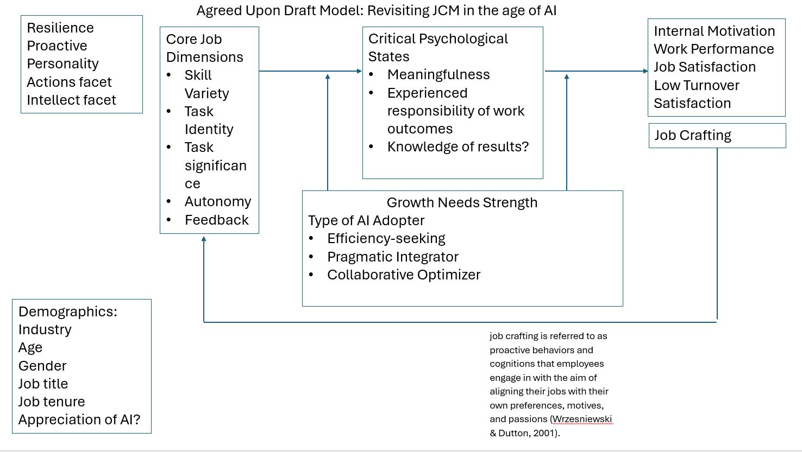

The Job Characteristics Model Revisited
Jane Doe
Department of Scholarly Studies, Generic University
Author Note
Jane Doe  https://orcid.org/0000-0000-0000-0001
https://orcid.org/0000-0000-0000-0001
Correspondence concerning this article should be addressed to Jane Doe, Department of Scholarly Studies, Generic University, 1234 Capital St., New York, NY 12084-1234, USA, Email: janedoe@generic.edu
Abstract
This document is a template.
Keywords: Keyword 1, Keyword 2, Keyword 3
The Job Characteristics Model Revisited
Figure 1
Working Draft Model: Revisiting JCM in the age of AI
see Figure 1
Method
Participants
Measures
Procedure
Results
Discussion
Limitations and Future Directions
Conclusion
References
Figure 1
Working Draft Model: Revisiting JCM in the age of AI

Appendix A
Notes from Alicia (7/23/26)
Growth Need Strength (GNS)
“As noted earlier, there is now substantial evidence that differences among people moderate how they react to their work, and individual need strength appears to be a useful way to conceptualize and measure such differences. The basic prediction is that people who have high need for personal growth and development will respond more positively to a job high in motivating potential than people with low growth need strength.” (Hackman & Oldham, 1976, p. 258)
Options for measurement:
Job Diagnostic Survey (JDS) Growth Need Strength Scales, Hackman and Oldham (1975)
- “Job Choice” GNS Scale
- Respondents choose between pairs of hypothetical jobs.
- Measures preference for challenging, growth-oriented work versus comfort, security, or other job features.
- I have the original article, but not the items themselves for the job choice measure– these two scales seem to first be described here: <https://werkwelzijnenmotivatie.wordpress. com/wp-content/uploads/2020/05/hackman-oldham-1975.pdf>
- “Would-Like” GNS Scale
- Respondents indicate how much challenge, responsibility, learning, autonomy, and growth they would like in a job, rated from 1 (not at all) to 5 (very much). I think these are the items themselves, although these (1975?) differ from the original in the 1974 tech report. I will attach the tech report– see the scoring key for which items in the appendix are to be summed for the GNS measure there.
“Considering all the things that are personally important to you in your work, how important is it to you to have…”
- ‘stimulating and challenging work’,
- ‘creative and imaginative work’,
- ‘a chance to exercise independent thought and action’,
- ‘opportunities to learn new things’,
- ‘opportunities for achievement’, and
- ‘opportunities for personal growth and development’.
Higher-Order Need Strength (HONS) Measures, Hackman and Lawler (1971) This appears to be prior to GNS: higher-order need strength, reflecting desires for:
- Achievement
- Challenge
- Responsibility
- Personal accomplishment